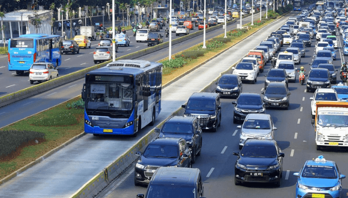
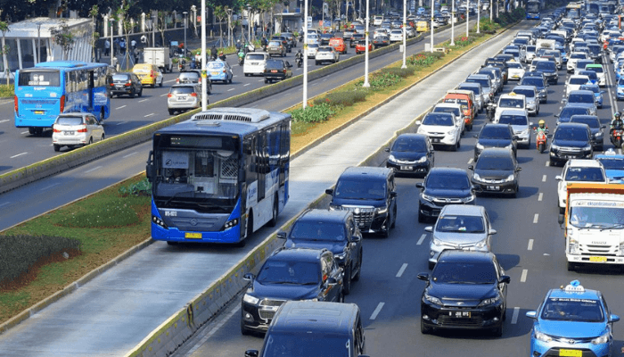

Cont-Trust GmbHis the market-leading provider of innovative land, air and sea transportation solutions with expert staff. Our services are designed to fully meet the needs of our customers. Our services that encompass our large knowledge and deep understanding are built on these three key areas.
Wherever you want to take your goods in the world; We provide you with logistic support with our strong and widespread agency network; We bring you together with the comfort of "delivery to address" service.
Transportation planners develop transport networks – roads, railways and air – that meet the needs of all users, and that consider environmental, efficiency and safety issues. They can work at a local, national or international level.

 
There are routes into this profession for school leavers and graduates. For graduates, degree requirements for this industry differ between employers. While some will be specific in the degrees they expect graduates to have, others will offer graduate schemes and/or positions to candidates from a wide variety of degree backgrounds. The following undergraduate subjects are often requested by employers in this sector: civil engineering. environmental sciences. transport planning. town planning. geography. maths. It's common for those pursuing a career as a transport planner to carry out a masters qualification in transport planning; some employers state a postgraduate qualification as an essential requirement. School leavers can take a transport planning apprenticeship, which involves studying for a qualification while working in a related job.